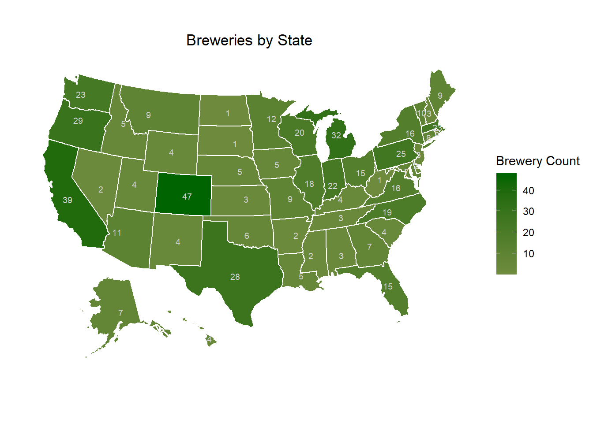
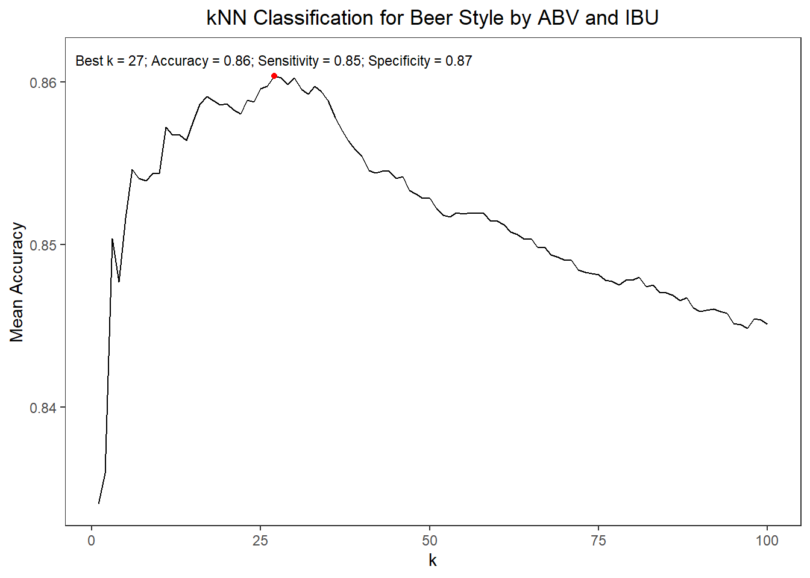

This project covers the details of exploratory analysis on US Craft Beers and Breweries data sets as requested by the Budweiser executive team. Our team did the required analysis on the data sets provided, and have consolidated answers for key questions, as well as interesting findings, in this project.
Import the beers and breweries data sets, remove any duplicates, and take a glimpse at them to make sure they are read successfully.
## Observations: 2,377
## Variables: 7
## $ Name <fct> Pub Beer, Devil's Cup, Rise of the Phoenix, Siniste...
## $ Beer_ID <int> 1436, 2265, 2264, 2263, 2262, 2261, 2260, 2259, 225...
## $ ABV <dbl> 0.050, 0.066, 0.071, 0.090, 0.075, 0.077, 0.045, 0....
## $ IBU <int> NA, NA, NA, NA, NA, NA, NA, NA, NA, NA, NA, NA, NA,...
## $ Brewery_id <int> 409, 178, 178, 178, 178, 178, 178, 178, 178, 178, 1...
## $ Style <fct> American Pale Lager, American Pale Ale (APA), Ameri...
## $ Ounces <dbl> 12.0, 12.0, 12.0, 12.0, 12.0, 12.0, 12.0, 12.0, 12....## Observations: 558
## Variables: 4
## $ Brew_ID <int> 1, 2, 3, 4, 5, 6, 7, 8, 9, 10, 11, 12, 13, 14, 15, 16,...
## $ Name <fct> NorthGate Brewing, Against the Grain Brewery, Jack's A...
## $ City <fct> Minneapolis, Louisville, Framingham, San Diego, San Fr...
## $ State <fct> MN, KY, MA, CA, CA, SC, CO, MI, MI, MI, MI, MI, MI, MI...
Most of the breweries are on the west coast, in Texas, and in more populous states on the east coast. The number of breweries in general seem to relate to the population of the state. A couple of interesting exceptions however - CO with 47 breweries and MI with 32 breweries seem to have more number of breweries than their population warrants.
## Brewery_Id Beer_Name Beer_Id ABV IBU
## 1 1 Get Together 2692 0.045 50
## 2 1 Maggie's Leap 2691 0.049 26
## 3 1 Wall's End 2690 0.048 19
## 4 1 Pumpion 2689 0.060 38
## 5 1 Stronghold 2688 0.060 25
## 6 1 Parapet ESB 2687 0.056 47
## Beer_Style Beer_OZ Brewery_Name
## 1 American IPA 16 NorthGate Brewing
## 2 Milk / Sweet Stout 16 NorthGate Brewing
## 3 English Brown Ale 16 NorthGate Brewing
## 4 Pumpkin Ale 16 NorthGate Brewing
## 5 American Porter 16 NorthGate Brewing
## 6 Extra Special / Strong Bitter (ESB) 16 NorthGate Brewing
## Brewery_City Brewery_State
## 1 Minneapolis MN
## 2 Minneapolis MN
## 3 Minneapolis MN
## 4 Minneapolis MN
## 5 Minneapolis MN
## 6 Minneapolis MN## Brewery_Id Beer_Name Beer_Id ABV IBU
## 2372 556 Pilsner Ukiah 98 0.055 NA
## 2373 557 Heinnieweisse Weissebier 52 0.049 NA
## 2374 557 Snapperhead IPA 51 0.068 NA
## 2375 557 Moo Thunder Stout 50 0.049 NA
## 2376 557 Porkslap Pale Ale 49 0.043 NA
## 2377 558 Urban Wilderness Pale Ale 30 0.049 NA
## Beer_Style Beer_OZ Brewery_Name
## 2372 German Pilsener 12 Ukiah Brewing Company
## 2373 Hefeweizen 12 Butternuts Beer and Ale
## 2374 American IPA 12 Butternuts Beer and Ale
## 2375 Milk / Sweet Stout 12 Butternuts Beer and Ale
## 2376 American Pale Ale (APA) 12 Butternuts Beer and Ale
## 2377 English Pale Ale 12 Sleeping Lady Brewing Company
## Brewery_City Brewery_State
## 2372 Ukiah CA
## 2373 Garrattsville NY
## 2374 Garrattsville NY
## 2375 Garrattsville NY
## 2376 Garrattsville NY
## 2377 Anchorage AKIBU value is missing in 42% of the observations. Few observations are missing values for ABV and/or Beer Style as well; however, they are not too concerning for our analyses. Let us look at the % missing of IBU values by State to see if the problem is limited to a few states.
IBU values are missing across states; there are quite a few states or which more than 50% observations are missing IBU measure. SD is missing IBU measure for all observations. We will ignore observations with missing values for further analysis as applicable.
Let us look at summary of median measures to assess how we need to scale measures to depict them on same plot
## State ABV IBU
## AK : 1 Min. :0.0400 Min. :19.00
## AL : 1 1st Qu.:0.0550 1st Qu.:30.00
## AR : 1 Median :0.0555 Median :35.00
## AZ : 1 Mean :0.0559 Mean :37.10
## CA : 1 3rd Qu.:0.0580 3rd Qu.:44.25
## CO : 1 Max. :0.0625 Max. :61.00
## (Other):45 NA's :1The variance of median IBU values across is more compared to the variance for median ABV values. The strength of the bar color represents our confidence in the median value reported for the state, given the missing values for measures. E.g. even though ME is depicted as having the highest median IBU value, we are not very confident on that measure as less than 25% of the ME observations have IBU value reported.
The highest ABV values for CO, IN, and KY seem to be outliers; they are significantly higher compared to the general range of highest ABV value for rest of the state (which are in he range 7.5% to 10%).
Again, variance of highest IBU values across states is more compared to the variance for highest ABV values, which is same as what we have found with median values.
As discussed in the max. ABV plot, the box plot depicts the 3 outlier values CO, IN, and KY towards the right. Most of the beers have ABV value between 4% to 7% range. Given the outliers, median is still a good center measure to assess the distribution of ABV measure.
The scatterplot does depict a moderate positive correlation between ABV and IBU values - a beer with high ABV value is likely to have higher IBU value as well. However, we cannot establish causation - higher ABV value doesn’t cause higher IBU value.
Look at summary of the data subset to assess variables and see if we need to normalize them to scale.
## ABV IBU Ale_Category
## Min. :0.035 Min. : 4.00 Length:924
## 1st Qu.:0.052 1st Qu.: 28.00 Class :character
## Median :0.060 Median : 45.00 Mode :character
## Mean :0.062 Mean : 50.06
## 3rd Qu.:0.070 3rd Qu.: 70.00
## Max. :0.099 Max. :138.00Using the normalized variables, run KNN model for different values of k in 100 iterations with random train and test splits, and compute the mean accuracy. Calculate hyper parameter k value for highest accuracy.

Using the KNN model based on ABV and IBU, we are getting greater than 85% accuracy in most cases. Our Sensitivity and Specificity statistics are are looking good. As such, this is a good model to classify beers into IPA and Other Ale categories.
We will compare the percentage of breweries across states using a weighted percentage based on state’s population (based on 2019 census) and area (80:20 weightage).
Based on the above, CA and TX, and to a lesser extent FL, NY, and NJ, may benefit from more number of breweries based on their population. CO seems to have way too many breweries for it’s population - if the inventory levels are maintained well at these breweries, it may not be a cause for concern.
The above analysis calls out AK as one of the states that can benefit from more breweries, but that inference is mostly based on AK’s huge size, and can be discarded as such.